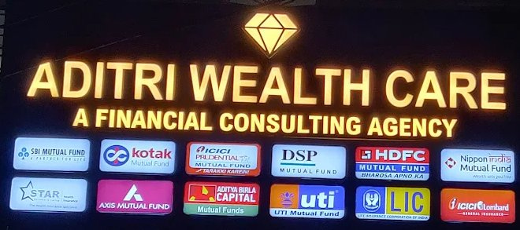
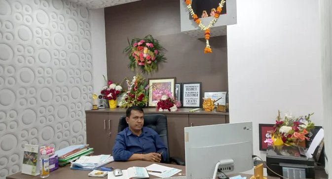
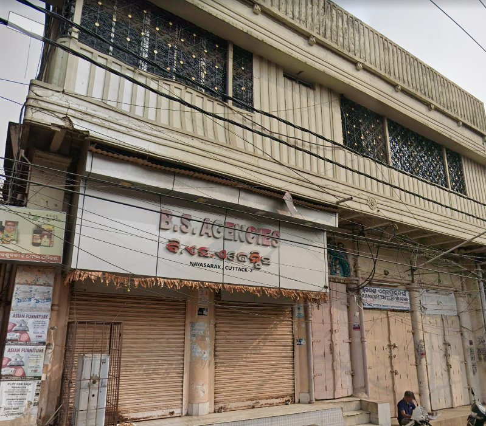
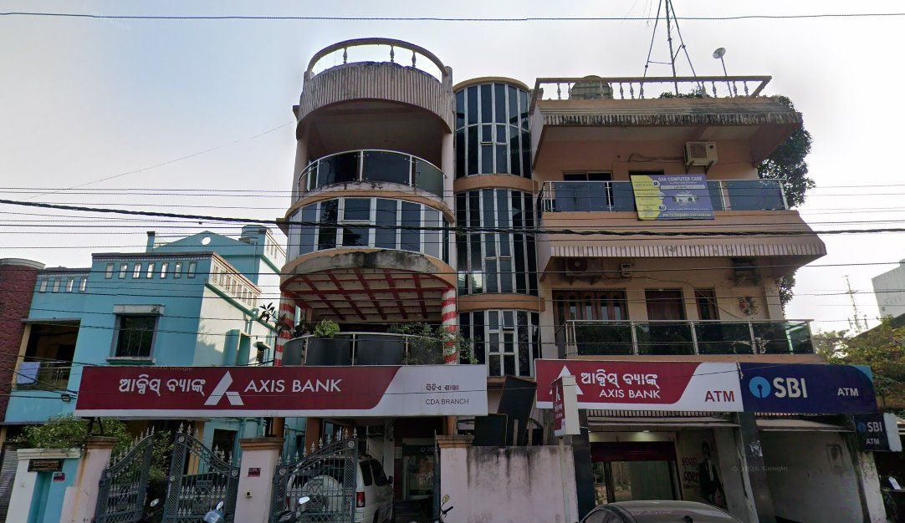
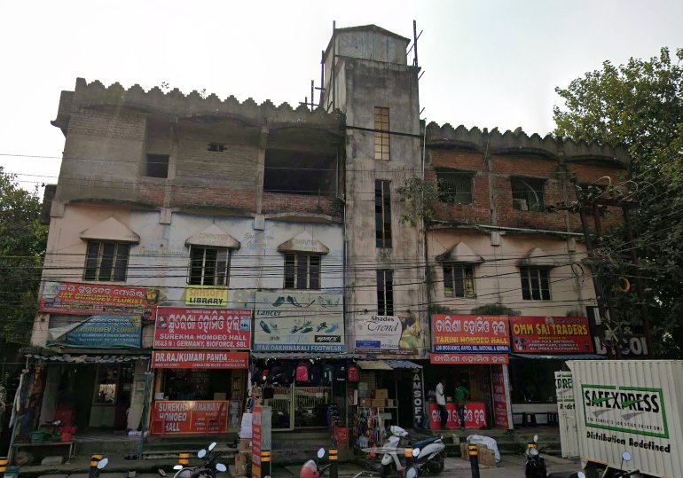
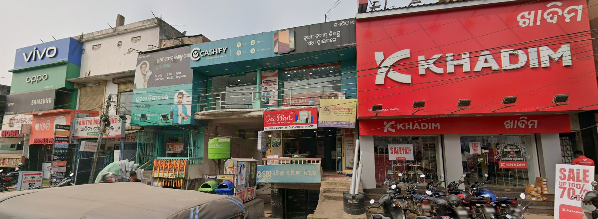

Why CDA Sector 6 Residents Are Well-Placed to Invest in Mutual Funds
CDA is not a chaotic market area. It is a planned colony with a literate, salaried population, wide roads, a community market, banks, and a post office — all within walking distance. The financial profile of a typical CDA Sector 6 household is ideal for mutual fund investing:
- Stable monthly income — government salary, pension, or business income
- Low immediate liquidity pressure — own home, no rent burden
- Long investment horizons — 10–25+ years for retirement or children’s education
- Existing bank relationships — SBI, Axis Bank branches in Sector 6 itself
A Systematic Investment Plan (SIP) allows you to invest a fixed amount in a mutual fund periodically — as little as ₹500 per month — building wealth gradually without needing a lump sum. For the typical CDA government employee or pensioner, starting a ₹2,000–₹5,000 monthly SIP through a trusted local distributor is one of the most straightforward wealth-building decisions they can make.
What a Mutual Fund Distributor Actually Does for You
A Mutual Fund Distributor (MFD) is not a random agent trying to sell you something. AMFI-registered MFDs are intermediaries empanelled with multiple Asset Management Companies (AMCs). They must pass the NISM Series V-A exam, renew certification every 3 years, and follow the AMFI Code of Conduct and SEBI regulations.
What a good MFD does for you in practice:
- Assesses your financial goals — children’s education, retirement, emergency fund, home purchase
- Identifies your risk appetite — conservative (debt funds), moderate (hybrid), aggressive (equity)
- Recommends schemes across multiple AMCs — not just one fund house
- Handles KYC paperwork — so you don’t need to figure it out yourself
- Monitors your portfolio and suggests changes when needed
- Helps with redemption when you need to withdraw
- Sends reminders before SIP mandate expiry or tax deadlines
The distributor earns a trail commission from the AMC — typically 0.2% to 1% per year of your invested amount. You pay nothing extra. A trustworthy distributor’s income grows only when your investment grows — that alignment of interest is why a good MFD is worth finding.
At a Glance: Top 5 Mutual Fund Distributors Serving CDA Sector 6 (March 2026)
| # | Name | Rating | Phone | Best For |
|---|---|---|---|---|
| 1 | Aditri Wealth Care | ⭐ 5.0 (54 reviews) | +91 99370 90915 | Long-term wealth, insurance + MF |
| 2 | Wealth Builders Investment Services | ⭐ 5.0 (19 reviews) | +91 99380 36161 | Goal-based SIP, equity funds |
| 3 | Axis Bank — CDA Sector VI | ⭐ 4.6 (73 reviews) | 1860 500 5555 | Existing Axis customers, easy SIP setup |
| 4 | Motilal Oswal Financial Services | Listed CDA Sec-10 | +91 97311 36535 | Equity + stocks + MF combo |
| 5 | NJ Wealth — Cuttack | ⭐ 5.0 | +91 79784 13773 | All AMCs, open Sundays |
🏆 1. Aditri Wealth Care — Best Overall Wealth Manager in Cuttack
Aditri Wealth Care is the highest-rated financial services firm in the Cuttack district based on Google reviews — a perfect 5.0 across 54 genuine client reviews, which is exceptional for any financial services business in Odisha. The firm is run by Mr. Bindu Bhusan Swain, a well-regarded wealth manager who has been managing client portfolios for over a decade. Although physically located near Badambadi, they actively service clients across CDA Sector 6 and the entire Cuttack district, including home visits.
🏠 Aditri Wealth Care — Badambadi, Cuttack (Home Visits to CDA)
⭐ 5.0 / 5 (54 reviews)Sat: 9:30 AM – 5:00 PM


Services Offered
A couple in their 70s wrote: “Since 10 years, Mr. Swain has been managing our wealth and helping us create wealth. Excellent service and very trustworthy person.” Another reviewer called it “the best financial services office in Cuttack and Odisha.” Multiple reviews emphasise that Mr. Swain customises financial plans based on individual needs rather than pushing generic products.
🏆 2. Wealth Builders Investment Services — Best for Goal-Based SIP & Equity Funds
Run by Mr. Ashish Modi, Wealth Builders is a highly specialised mutual fund distribution firm on Naya Sarak Road, Cuttack — reachable in 15–20 minutes from CDA Sector 6. With a 5.0 Google rating from 19 investors, the firm is particularly strong on equity fund analysis, SIP structuring, and capital markets knowledge.
🏠 Wealth Builders Investment Services — Naya Sarak Road, Cuttack
⭐ 5.0 / 5 (19 reviews)(Latest closing in Cuttack)

Services Offered
Reviewers describe Mr. Modi as someone who “protects your money, suggests when to pull out and when to invest” and provides advice “on the basis of the investor’s requirement and risk-taking abilities.” One client noted: “At Wealth Builders, you get mutual funds curated according to your own financial goals and risk appetite.”
🏠 3. Axis Bank — CDA Sector VI Branch — Best for Existing Axis Customers
If you already hold an Axis Bank savings account, the Sector VI CDA branch is your most convenient starting point for mutual fund investments. Axis Bank’s wealth management desk can set up SIPs, recommend Axis AMC funds, and also facilitate access to third-party fund houses through their platform.
🏠 Axis Bank — CDA Sector VI Branch, Cuttack
⭐ 4.6 / 5 (73 reviews)
Mutual Fund Services at This Branch
Reviewers at this branch rate it highly: “Excellent service — they prefer to serve people with door-step service for both normal and senior citizens.” One customer specifically thanked the branch manager for quick, personalised service.
🏆 4. Motilal Oswal Financial Services — Best for Equity + Stock + MF Combo
Motilal Oswal is one of India’s most recognised equity research and mutual fund distribution firms. Their CDA Cuttack outlet, located in CDA Sector 10 (less than 2 km from Sector 6), is well-suited for investors who want to invest in equity markets alongside mutual funds — or those specifically interested in Motilal Oswal AMC’s well-regarded equity schemes.
🏠 Motilal Oswal Financial Services — CDA Sector 10, Cuttack
Equity + MF
Services Offered
🏆 5. NJ Wealth Cuttack — Best Platform Access & Open Sundays
NJ Wealth (formerly NJ India Invest) is one of India’s largest mutual fund distribution networks, with access to nearly every AMC’s schemes on a single platform. Their Cuttack office operates out of Bajrakabati and services investors across the district, including CDA.
🏠 NJ Wealth — Bajrakabati, Cuttack
⭐ 5.0 • Open SundaysSunday: 10:00 AM – 5:00 PM

Services Offered
🎥 Watch: How SIP Works and Why You Should Start Now
If you are new to mutual fund investing or want to understand exactly how a SIP grows your money over time, this video walks through the core concept clearly — including how compounding works, why starting early matters far more than starting big, and what to expect from equity mutual funds over the long term.
Documents You Need to Start Investing in Mutual Funds
Bring these to your first meeting with any distributor. KYC is a one-time process — once done, you never need to repeat it for any AMC in India.
For New Investors (First-Time KYC)
- PAN Card — mandatory for all mutual fund investments above ₹50,000 and essential for KYC
- Aadhaar Card — for address proof and e-KYC verification (OTP sent to your Aadhaar-linked mobile)
- Cancelled cheque or bank passbook first page — for SIP auto-debit bank mandate
- Passport-size photograph — 1 copy (for physical KYC form)
- Mobile number linked to Aadhaar — for OTP-based e-KYC (fastest method)
For Existing KYC-Compliant Investors
SIP Growth Illustration for CDA Sector 6 Investors
Here’s a realistic picture of how a monthly SIP grows over time, based on a 12% annual return — a reasonable long-term estimate for diversified equity funds:
| Monthly SIP | Duration | Total Invested | Estimated Value at 12% p.a. | Gain |
|---|---|---|---|---|
| ₹2,000/month | 10 years | ₹2.40 lakh | ₹4.65 lakh | +₹2.25 lakh |
| ₹5,000/month | 15 years | ₹9 lakh | ₹27.9 lakh | +₹18.9 lakh |
| ₹10,000/month | 20 years | ₹24 lakh | ₹99 lakh | +₹75 lakh |
| ₹3,000/month | 25 years | ₹9 lakh | ~₹1.02 crore | +₹93 lakh |
The core point: starting early matters far more than starting big. A CDA Sector 6 government employee who starts a ₹3,000 SIP at age 30 and holds it until 55 will likely retire with over ₹1 crore from that single SIP — without doing anything else.
Types of Mutual Funds Explained Simply
Confused about which fund to pick? Here’s the simplest framework:
-
1Safety & Liquidity (3 months – 1 year) → Liquid Funds / Ultra Short Duration Funds — Better than savings account returns, full liquidity within 1 working day. Ideal for your emergency fund or short-term savings.
-
2Steady Income + Some Growth (2–5 years) → Balanced / Hybrid Funds — Mix of equity and debt. Lower risk than pure equity, higher returns than pure debt. Good for medium-term goals like a vehicle purchase or home renovation.
-
3Save Tax + Build Wealth (3-year lock-in) → ELSS Funds — Qualifies for ₹1.5 lakh deduction under Section 80C. The shortest lock-in among all 80C options. Great for government employees in the 20–30% tax bracket.
-
4Maximum Long-Term Growth (7+ years) → Large Cap / Flexi Cap / Mid Cap Equity Funds — Best for retirement planning and children’s education corpus. Can be volatile short-term but historically the strongest performers over 10+ years.
-
5First-Time Investor, Want One Simple Fund → Nifty 50 Index Fund — Low cost, no fund manager risk, tracks the overall market. The ideal starting point for any investor who doesn’t know which fund to pick.
Questions to Ask Your Mutual Fund Distributor Before Investing
-
1Are you AMFI registered? What is your ARN number? Every legitimate MFD has an ARN (AMFI Registration Number). Verify it at amfiindia.com → Locate Distributor. Never invest with anyone who cannot show their ARN.
-
2Are you a distributor (commission-based) or a SEBI-RIA (fee-based)? Most local distributors in Cuttack are MFDs (commission model). SEBI-RIAs charge a flat fee for unbiased advice. Both are valid — just understand which model you’re working with.
-
3Do you have access to all AMCs, or are you tied to one fund house? A bank relationship manager may only recommend their own AMC’s schemes. Independent MFDs like Aditri Wealth Care and NJ Wealth can access all AMCs and pick the best scheme for you.
-
4How will you remind me about my portfolio? Will they call quarterly? Send WhatsApp updates? Review your portfolio annually? A good distributor stays in touch proactively — not just at the time of investment.
-
5What is the process if I want to redeem my investment? Redemption should be simple (2–3 working days for equity funds). Ask if the distributor handles redemption requests for clients or if you’ll have to do it yourself through the AMC portal.
Red Flags: What to Watch Out For
Not everyone selling mutual funds in CDA has your best interests at heart. Watch for these warning signs:
- Guaranteed return promises — Mutual fund returns are never guaranteed. Anyone promising “12% guaranteed” is either lying or selling an insurance-linked product (ULIP), not a genuine mutual fund.
- Pressure to invest a large lump sum immediately — A trustworthy distributor will let you start with whatever amount you’re comfortable with and never rush you.
- No ARN number — If someone cannot show their AMFI Registration Number, do not invest through them under any circumstances.
- Pushes only one fund house — A good distributor recommends the best fund for your needs, not the fund paying the highest commission to them.
- No written documentation — Always get a written account statement after every investment. CAMS and KFintech send these automatically to your registered email.
Frequently Asked Questions
Our Final Recommendation for CDA Sector 6 Residents
CDA Sector 6 has everything a good investor needs: stable income, time, and access to trustworthy advisors. The only thing missing is the first step.
Pick one name from this list. Call them this week. Ask for a free 30-minute consultation. You do not need to invest anything in that first meeting — just listen, ask your questions, and see if you trust them.
The best time to start a SIP was 10 years ago. The second-best time is this month.